NOVKABEL NEW TOWER, Novi Sad, Serbia
Kompleks čine dve nezavisne poslovne zgrade spratnosti P+8, ukupne površine 14.708 m². UNDA je bila angažovana na projektovanju i stručnom nadzoru svih elektroinstalacija.
Posetite zvanični sajtZavršeni projekti
Kompleks čine dve nezavisne poslovne zgrade spratnosti P+8, ukupne površine 14.708 m². UNDA je bila angažovana na projektovanju i stručnom nadzoru svih elektroinstalacija.
Posetite zvanični sajt
Savremeni stambeni kompleks na Novom Beogradu, osmišljen tako da stanarima pruži udobnost, kvalitetno okruženje i dobru povezanost sa gradom. UNDA je obavljala stručni nadzor elektro radova i upravljanje projektom.
Posetite zvanični sajt
Prvi savremeni poslovni distrikt u Novom Sadu obuhvata više od 46.000 m² poslovnog prostora, 39.161 m² površine za izdavanje i 588 parking mesta. Radovi su počeli u oktobru 2024. godine, a planirani završetak i predaja zakupcima očekuju se u januaru 2026. godine. UNDA je angažovana na stručnom nadzoru elektro radova i upravljanju projektom.
Posetite zvanični sajt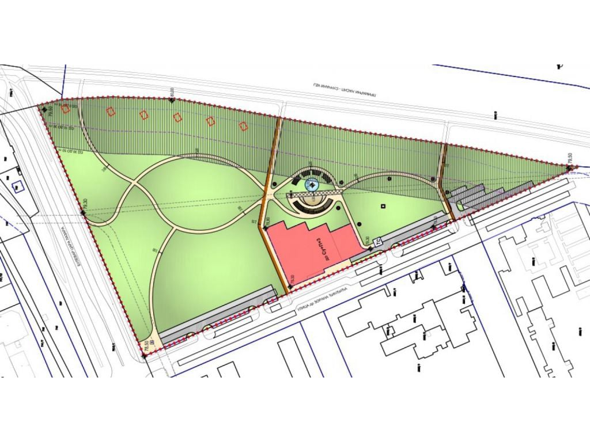
Izrada projektne dokumentacije za budući park u blizini univerzitetskog centra, sa ciljem stvaranja savremenog i funkcionalnog javnog prostora.
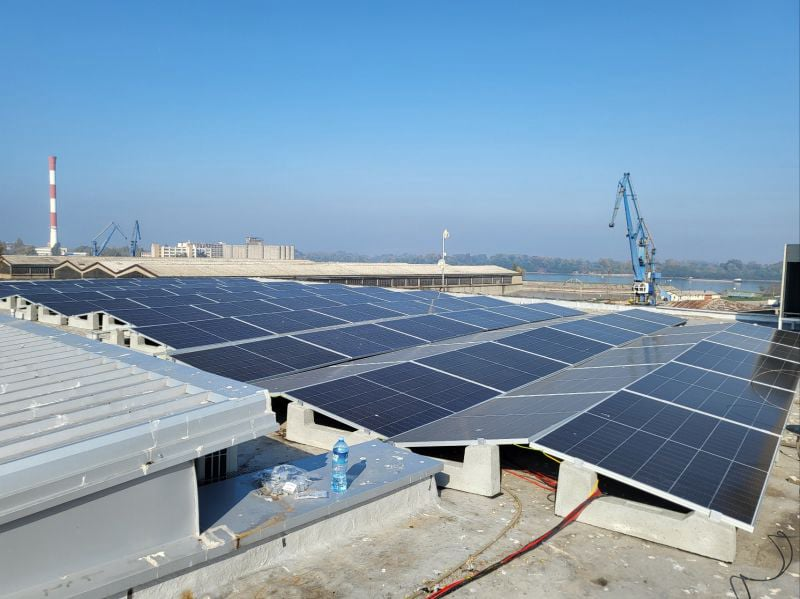
Mala solarna elektrana snage 144 kW na krovu objekta farmaceutske kompanije u Luci Beograd. UNDA je učestvovala u projektovanju i stručnom nadzoru.
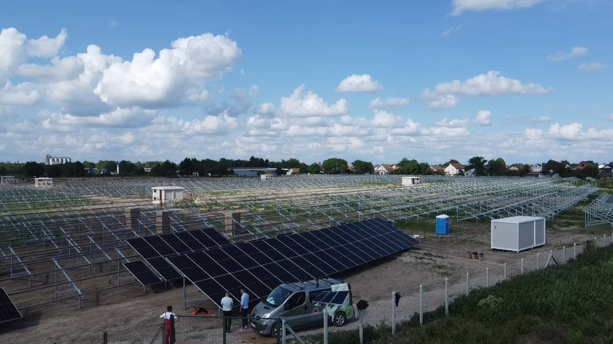
Solarna elektrana na oko 13 hektara sa više od 21.000 panela, 80 invertora i pet trafostanica. Instalirana snaga je oko 14 MW, a priključna snaga ograničena je na 9,32 MW. UNDA je obavljala projektovanje i stručni nadzor.
Posetite zvanični sajt
Za svaku od pet solarnih elektrana primenjeno je rešenje sa string boksovima na DC/NN strani i dva kontejnera snage 2 × 6,6 MW. Svaki kontejner sadrži šest inverterskih jedinica snage 1,1 MW i transformator Sungrow 0,8/20 kV, snage 6.600 kVA.
Pročitajte više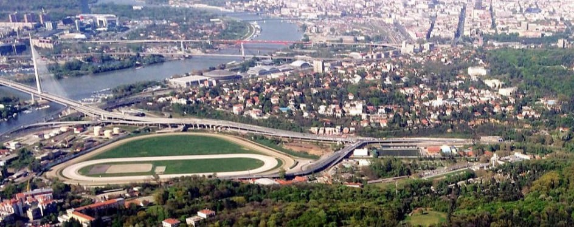
Projektovanje luksuzne stambene vile u prestižnom beogradskom naselju, sa savremenim elektroinstalacijama i tehnologijama pametne kuće.
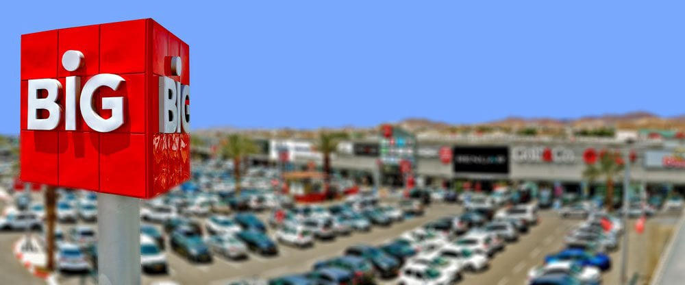
Izrada projektne dokumentacije za novi objekat u okviru BIG CEE kompleksa u Zrenjaninu, površine približno 10.000 m².
Posetite zvanični sajt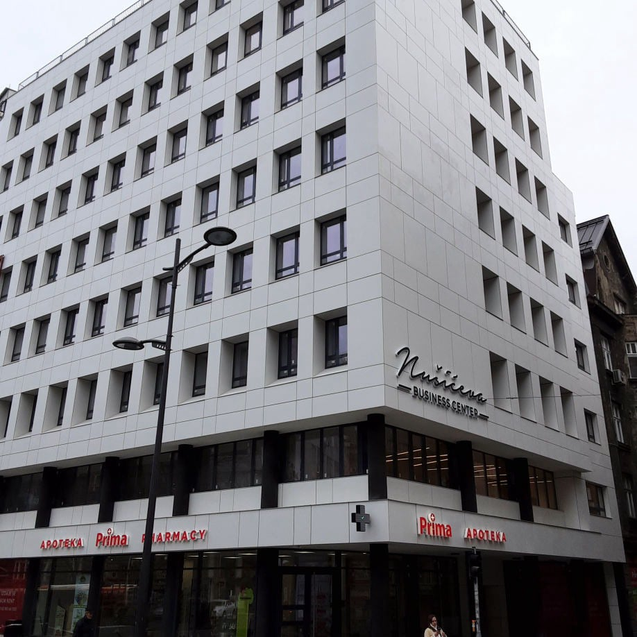
Poslovni centar na adresi Nušićeva 15, u neposrednoj blizini Trga Republike, Narodne skupštine i Knez Mihailove ulice, ukupne površine 3.590 m². UNDA je obavljala stručni nadzor elektro radova.
Posetite zvanični sajt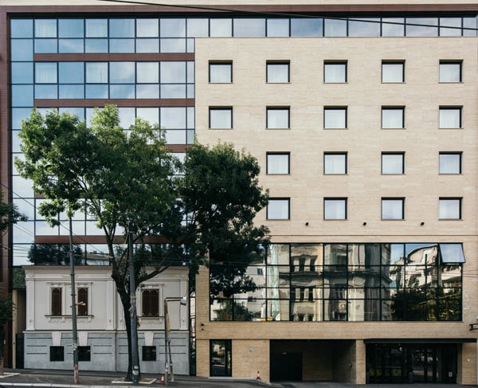
Stručni nadzor elektro radova na izgradnji hotela nastalog dogradnjom i rekonstrukcijom kuće Filipa Filipovića, objekta pod zaštitom kao kulturno dobro.
Posetite zvanični sajt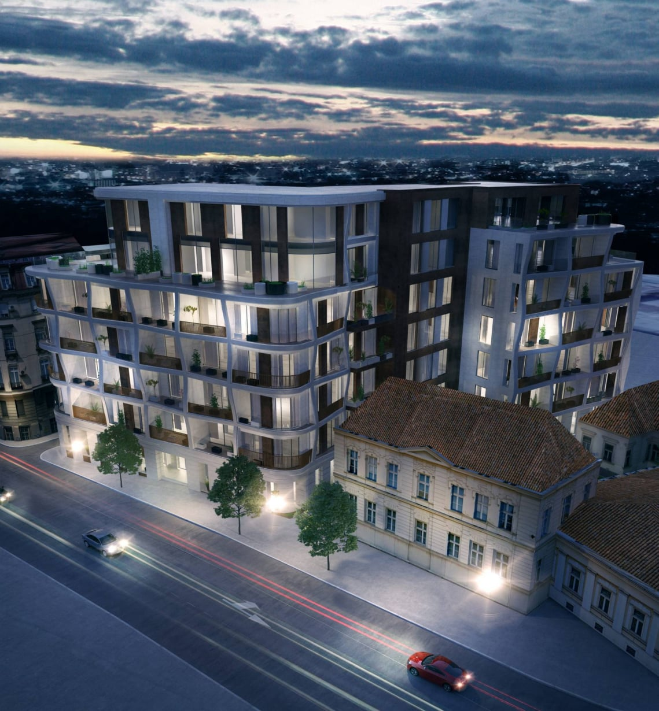
Luksuzni stambeni kompleks u centru Beograda sa 26 stanova površine od 93 do 470 m², raspoređenih na četiri etaže i dva penthausa, u neposrednoj blizini Knez Mihailove ulice i Kalemegdana.

Dogradnja četiri etaže sa savremenim medicinskim sadržajima, dijagnostikom, operacionim blokom i pratećim prostorima, ukupne površine oko 9.500 m². UNDA je bila angažovana na stručnom nadzoru.
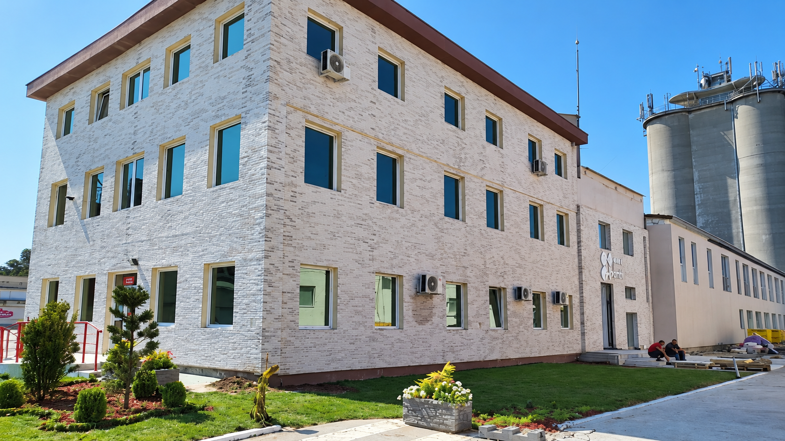
Stručni nadzor elektro radova na izgradnji novog istraživačko-razvojnog centra kompanije Bambi u Požarevcu.
Posetite zvanični sajt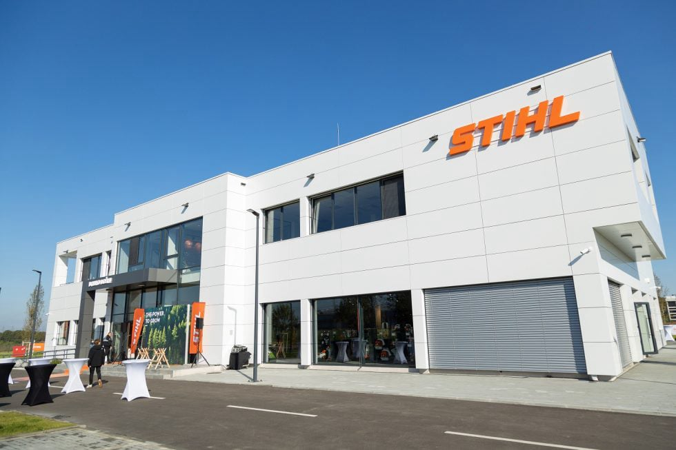
Stručni nadzor elektro radova na izgradnji novog centralnog objekta kompanije STIHL u Beogradu, izvedenog u skladu sa međunarodnim standardima kompanije.

Stručni nadzor i izrada elektro projektne dokumentacije za više faza proširenja fabrike: proizvodne i skladišne prostore, hladnjaču, otpremu, galeriju, pešačke komunikacije, zonu za otpad i energetski blok.
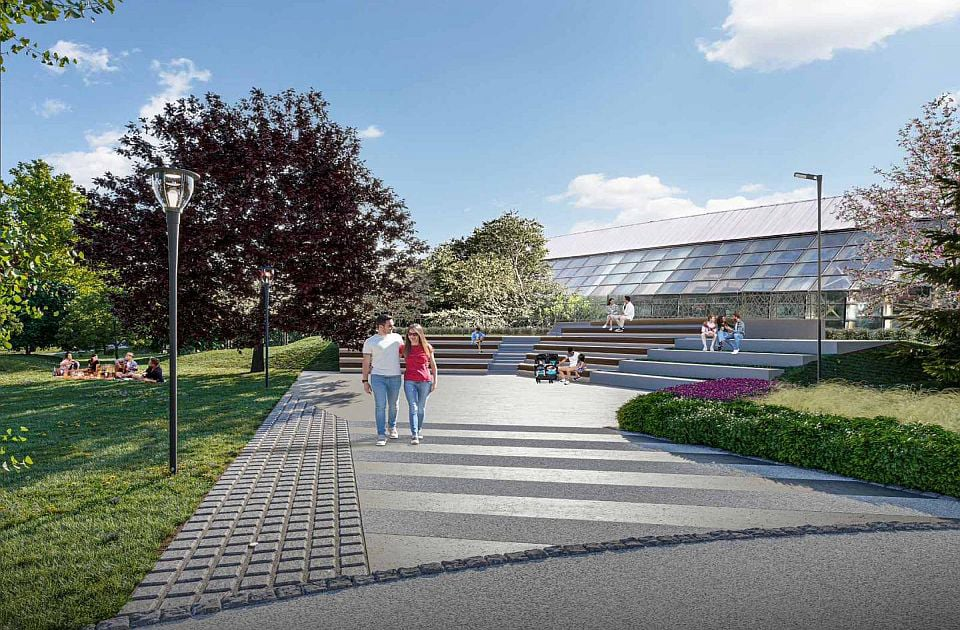
Izrada projektne dokumentacije za budući park u neposrednoj blizini sportskog i poslovnog centra SPENS u Novom Sadu.
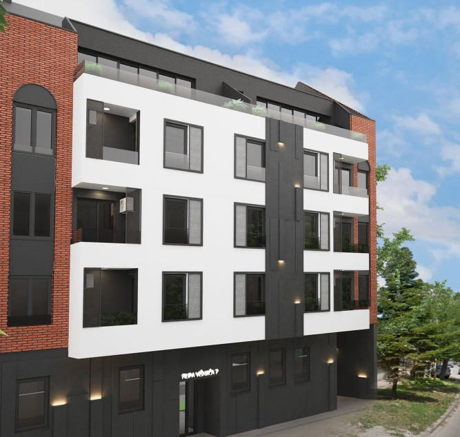
Projektovanje elektroinstalacija za luksuzne stambene objekte u Novom Sadu na lokacijama Preradovićeva 55, Filipa Višnjića 7–9, Palmotićeva 13 i na uglu Stražilovske i Radničke ulice.
Posetite zvanični sajt
Projektovanje i stručni nadzor stambeno-poslovnog objekta u starom jezgru Zemuna, sa 75 stambenih jedinica i poslovnim sadržajima u prizemlju.
Posetite zvanični sajt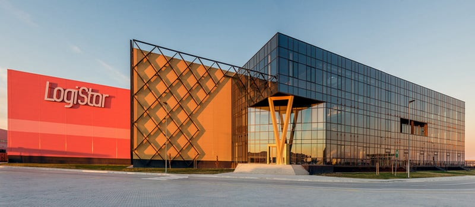
Stručni nadzor izgradnje logističko-distributivnog centra u Šimanovcima, realizovanog kroz tri faze i ukupne površine oko 50.000 m².
Posetite zvanični sajt
Stručni nadzor izgradnje skladišnog objekta površine 15.670 m², projektovanog prema međunarodnim standardima, zahtevima FM Global, propisima zaštite od požara i principima energetske efikasnosti.
Posetite zvanični sajt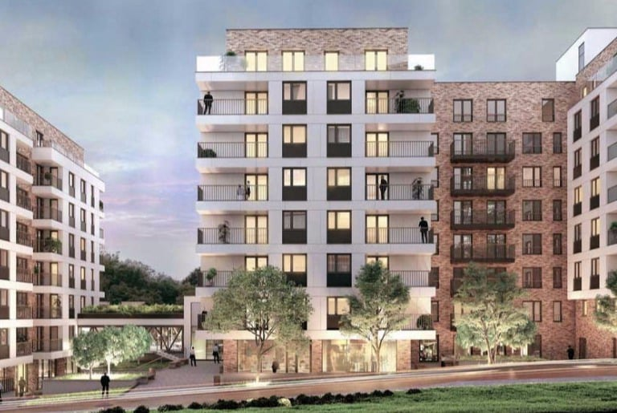
Stručni nadzor izgradnje jednog od najvećih stambeno-poslovnih kompleksa na Vračaru, ukupne površine oko 40.000 m², sa tri podzemne i sedam nadzemnih etaža.
Posetite zvanični sajt